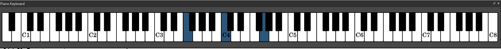

Este capítulo é focado na primeira fase, a identificação. Como já vimos anteriormente, a pauta de piano são na verdade 2 pautas juntas, a de cima normalmente reservada para a mão direita / notas mais agudas e a parte de baixo reservada para a mão esquerda / notas mais graves. Como têm 2 claves diferentes, ou por outras palavras, como a posição das notas difere entre cada mão (a nota na 3º linha na pauta em cima é diferente da nota da 3º linha na pauta em baixo), dá um nó na cabeça no inicio. Digo no inicio, porque dado um certo tempo repara-se que é essencial esta diferença de claves e até ajuda bastante na leitura do que se tivesse 2 claves iguais. Estas 2 pautas de piano juntas chama-se “grand staff”. Vamos começar com as primeiras imagens e iniciar alguns métodos rápidos para identificar notas.
A primeira visão geral de uma pauta
Esta é a “grand staff”, a pauta de piano. Como podemos ver, são 2 pautas com claves diferentes em cima e em baixo. Logo do lado esquerdo conseguimos ver uma chaveta que liga as 2 pautas, isto indica que estas 2 pautas estão agrupadas para 1 instrumento só, neste caso piano. Logo após as chavetas aparecem as claves que determinam a posição base das notas nessa pauta. Imediatamente à frente disso é-nos referido o número de acidentais que indica a escala que a música usa. Ainda não iniciamos o estudo de escalas, mas neste caso podemos ver que existem 2 acidentais, 2 bemoles, é tudo o que é necessário saber agora. O 4/4 significa a divisão do compasso / ritmo da musica, que vai ser explicado num capítulo futuro. Em cima temos uma colcheia = 100, isto é o tempo da musica, também vai ser explorado mais à frente no livro. O resto da pauta está vazia que é o local onde vamos colocar as notas!

Quando começamos a identificar notas, temos que pensar em pontos chave, que são os pontos seguros onde sabemos qual é a nota naquele espaço. No inicio só temos a certeza das notas que cada clave indica. A clave de sol em cima indica que o sol está na 2º linha. A clave de fá indica que o fá está na 4º linha. A imagem também representa a posição das notas no piano que é sempre importante! Estes 2 locais são os pontos de referência principais onde, a partir destes, conseguimos aos poucos localizar qualquer nota. Mas só com 2 pontos de referência não dá segurança, temos que saber mais locais. À medida que se vai ganhando experiência na identificação, mais pontos conseguimos criar, o que facilita muito a leitura. Vamos agora apresentar o 2º ponto chave mais importante: o dó central!
O dó central é a nota que está no meio, faz a ligação entre a pauta em baixo com a pauta em cima. Tudo o que está acima do dó central fica na maioria dos casos na pauta em cima, tudo o que está abaixo desta tende a ficar em baixo. O dó central é a nota C4 do piano, ou o 4º dó no piano, isto se for um piano de tamanho completo com as 88 teclas oficiais.
A imagem anterior representa a visão total de um piano e as teclas exatas que formam as 3 notas colocadas na pauta.
Esta imagem mostra um conceito comum nas pautas de piano. O dó central pode ser colocado na pauta em baixo como na pauta em cima, mas são exatamente a mesma nota. Muito bem, estes 3 pontos de referência são os mais importantes para se conseguir localizar qualquer nota, contando a partir dessa mesma nota para cima ou para baixo até chegar a uma nota que não se saiba. Mas ainda se pode saber mais um importante local: o C5, 5º dó do piano, 1 oitava acima do dó central.
Aos poucos começamos a expandir o nosso conhecimento dos locais na pauta, já temos 4. O último ponto de referência que vou introduzir vai ser o C3, 3º dó na pauta, 1 oitava abaixo do dó central.

Estes 5 pontos de referência permite que identifiquemos com muita rapidez qualquer nota em qualquer posição a partir daqui, pois estes pontos cobrem uma área muito grande e muito comum das notas que se tocam. Agora para identificar uma nota desconhecida, tudo o que temos que fazer é localizar o ponto de referência mais próximo e contar os passos.